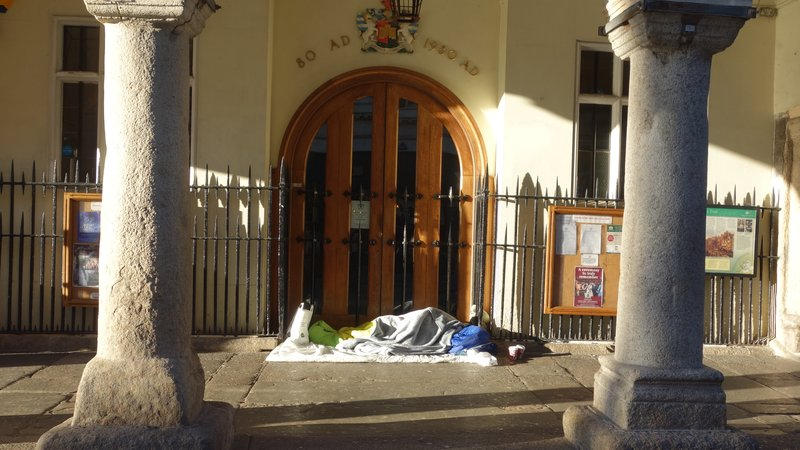

Devon County Council is proposing homelessness services spending cuts as part of £30 million of annual adult social care budget reductions despite rising numbers of rough sleepers and the likelihood that doing so will cost more than the savings it aims to make.
Although its 2023-24 budget includes an 8.8% increase in adult care expenditure, spending will now be directed to statutory services at the expense of those provided by Voluntary, Community and Social Enterprise (VCSE) organisations.
In Exeter these include homeless prevention services provided by Exeter YMCA, Gabriel House and Sanctuary Supported Living that offer practical support to anyone aged 18 or over who is homeless, at risk of becoming homeless or threatened with homelessness.
The county council’s finance director described its approach as a “re-prioritisation” when its outline budget plans were announced in January. Then a week after passing its budget in February it opened public consultations on plans to cut the funding of five adult social care services, including a £1.5 million adult homelessness prevention service contract that supports 250 people.
 Rough sleeping at Exeter Guildhall
The county council describing publication of its plans as “consultations” may be a misnomer.
While James McInnes, the Conservative county council cabinet member who is responsible for adult social care, said: “We’ll make no decisions until after the consultation and until after we’ve had time to fully digest what people tell us”, the council actually has very little room for manoeuvre.
Local authorities - unlike central government and NHS trusts - are compelled by law to set a balanced budget which cannot include a deficit and are locked into the total once it has been decided.
Nor do the homeless prevention consultation documents the county council provides offer sufficient information for people to make an informed response for it to digest.
They do not consider any other means to keep delivering the service and the justification for the proposed cuts is unhelpfully stated as: “The council is committed to supporting vulnerable adults across the county and focussing on its statutory responsibilities to ensure that individual eligible social care needs are met”.
An impact assessment is available elsewhere but there is no link to it from the consultation page.
The county council’s plans to cut adult homelessness prevention service funding have been widely criticised, with several Exeter service providers pointing out that are likely to lead to increased public expenditure rather than the savings the council aims to make.
Exeter YMCA, which currently receives £157,000 a year from the county council to provide homelessness prevention services, says the council could end up having to spend £924,000 a year on additional adult social care costs as a result of cutting its funding.
The responsibility for housing the 100 young people the YMCA helps with tailored support each year, as they come out of homelessness or dangerous situations and establish themselves, would otherwise fall on Exeter City Council, and would have additional impacts on the police and NHS.
A recent report on Exeter City Council’s updated homelessness prevention strategy confirmed that any capacity reductions among its homelessness service partners would expose it to increased levels of statutory homelessness and have a significant impact on its finances.
Exeter homelessness charity St Petrock’s, which does not receive county council funding but will also face additional service delivery pressures if the cuts go ahead, has highlighted their likely impact.
Its chief executive Peter Stephenson tweeted: “I’m deeply worried about Devon CC’s plan to end funding for Devon’s homelessness services. Rough sleeping in Exeter has roughly doubled in twelve months, but we could see it double again if this goes ahead. The result is unthinkable.”
Exeter Homelesseness Forum letter to Devon MPs
While central government funding policies are partly responsible for Devon County Council’s financial problems, it has forfeited much sympathy in the way it presented its proposed adult social care cuts. As Peter Stephenson put it: “They are consulting the public, but haven’t told the public they are being consulted.”
The county council’s statement justifying its proposals appeared the day after the consultations went live. But it does not provide a link to the consultation pages so anyone who wants more detail has to search to find it.
When the county council’s health and adult care scrutiny committee met to review the consultations last month its members commented on the need for better information and up to date impact assessments of the proposals which also assessed their wider costs.
A motion to pause the consultations to get more information on delivery costs and the likely financial impact of the cuts on other agencies was moved by Independent county councillor Jess Bailey, but was defeated.
When Exeter city councillors requested an update on the situation last week from Labour’s Martin Pearce, who is responsible for the city council’s homelessness prevention services, he said the county council had given neither Exeter’s homelessness prevention VCSE organisations nor the city council any warning of its social care cuts plans.
He said the city council, Exeter’s homelessness service providers and other key stakeholders were working together to try to influence the county council, if not to stop the cuts, then to at least phase the withdrawal of funding to avoid a cliff edge.
He declined to be drawn on whether county councillors who had approved the consultations were aware of their ramifications or simply ill-informed. He did say that service providers had reported that contract monitoring by the county council had effectively ceased, with a consequent loss of information flowing back to the council.
Examination of county council reports during pre-budget consultation meetings tends to support the view that councillors were ill-informed. Specific services were not singled out for cuts but warning flags were nevertheless plainly visible.
One such report said: “As we reiterate and refocus our promoting independence approach through our pending refreshed vision, and strategies, more people will be supported and enabled to need less or no commissioned care, replaced by VCSE and other support in their communities.”
Another said: “There is a very substantial risk that if the preventative work of many VCSE organisations ceases the burden on frontline statutory services will increase even more.”
It added: “During austerity and during the pandemic there was a reliance on the sector to ‘plug the gaps’ and support early intervention. However this cannot be provided at the same cost as previous years. Public sector needs to be aware that VCSE cannot continue to mitigate their service reductions.”
This report, a county council budget impact assessment, was considered at no fewer than three meetings: the county council budget scrutiny meeting on 30 January, the county council cabinet meeting on 10 February and the full county council budget setting meeting on 16 February at which all councillors are expected to be present.
At the same time a county council assessment of the likely impact of homeless prevention service cuts, which was published a week before the cabinet and full council meetings, identified increased homelessness and rough sleeping, job losses and adverse impacts on individual safety, health and wellbeing as probable consequences of the cuts.
Devon County Council’s adult homelessness service cuts consultation runs until 19 April.